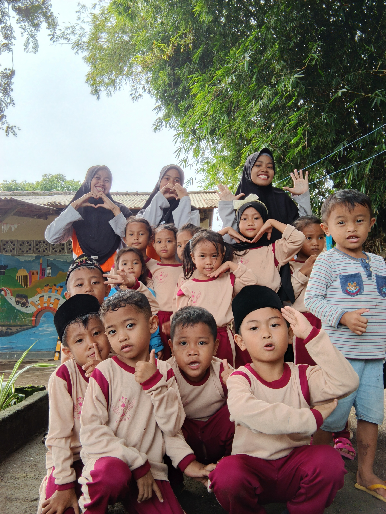
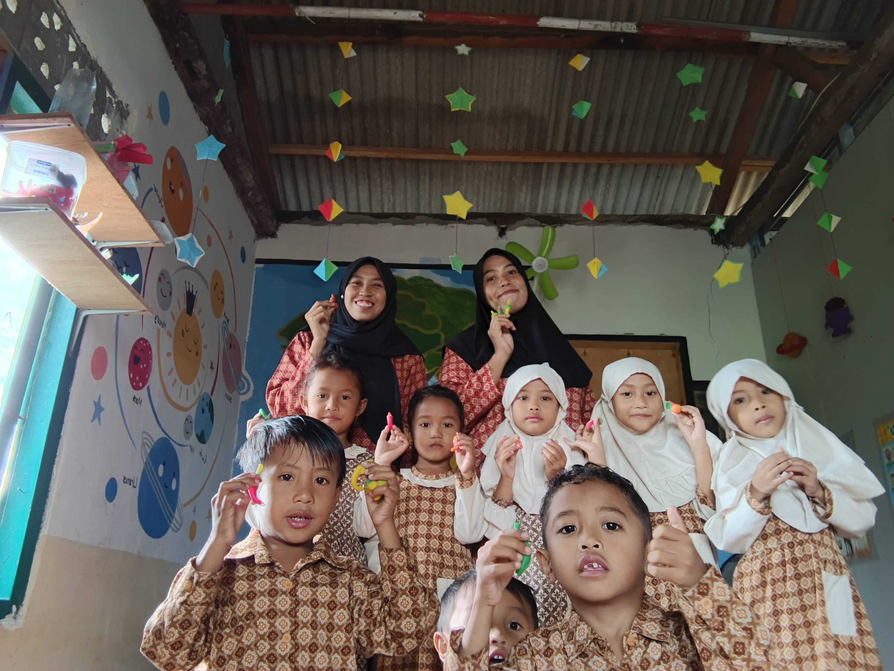
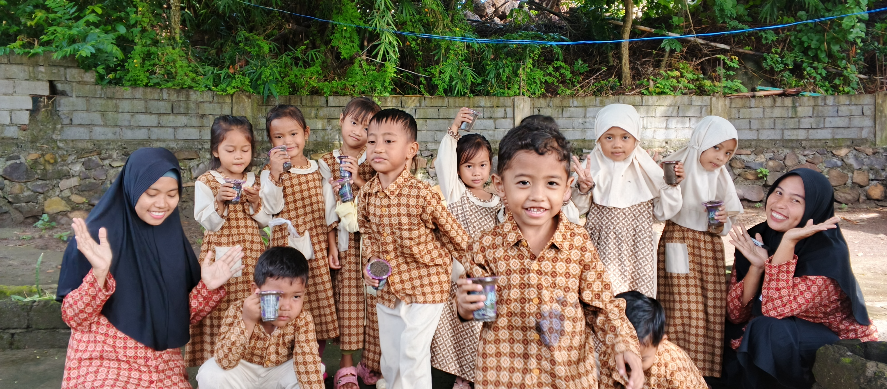
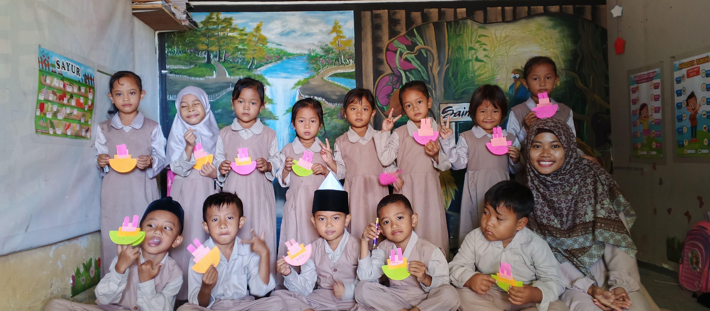
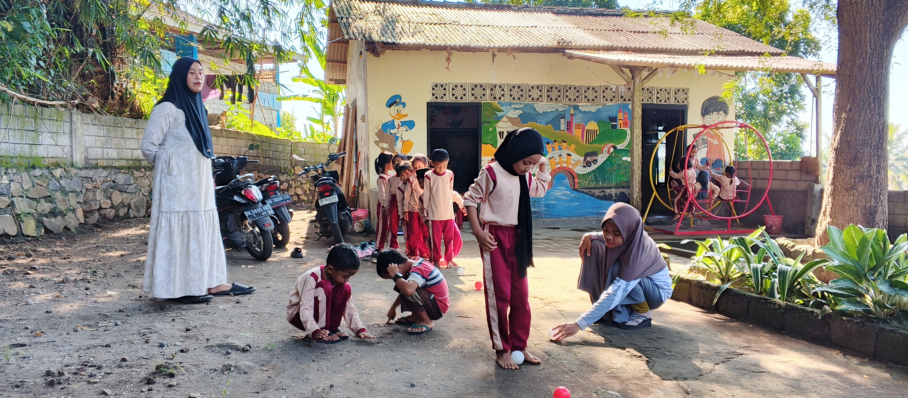

Di PAUD Saintek, kami memadukan keceriaan bermain dengan stimulasi sains dasar yang menyenangkan untuk masa depan cemerlang buah hati Anda.
Lingkungan terbaik untuk mendukung fase golden age anak.
Mengenalkan konsep dunia sekitar melalui eksperimen sederhana yang aman dan interaktif.
Mengasah motorik halus dan imajinasi lewat kerajinan tangan, musik, dan seni melipat kertas.
Membentuk kemandirian, kerja sama tim, dan perkembangan fisik yang sehat lewat ruang bermain terbuka.
Intip dokumentasi aktivitas seru anak-anak setiap harinya.

Kebersamaan anak-anak dan para pengajar.

Mengenal struktur tata surya dan kreasi seni di kelas.

Belajar bercocok tanam sejak dini untuk mencintai bumi.

Membuat karya seni perahu lipat warna-warni.

Permainan ketangkasan bola di halaman sekolah yang asri.